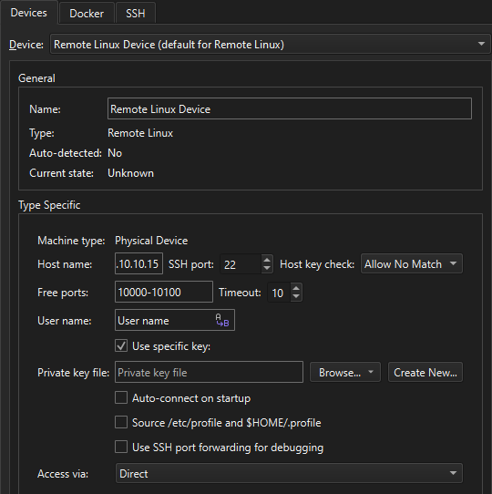

Developing for Remote Linux Devices
If you have a toolchain for building applications for embedded Linux devices installed on the computer, add it to a kit with the device type Remote Linux Device to build applications for and run them on the devices.
Use a wizard to connect remote Linux devices to the computer. You can edit the settings later in Preferences > Devices > Devices.

To automatically connect to the remote Linux device when Qt Creator starts, select Auto-connect on startup.
Protecting Device Connections
To protect the connections between Qt Creator and a device, use OpenSSH for remote login over the SSH protocol. The OpenSSH suite is not delivered with Qt Creator, so download it and install it on the computer. Then, configure the paths to the tools in Qt Creator.
You need either a password or an SSH public and private key pair for authentication. If you do not have an SSH key, use the ssh-keygen tool to create it in Qt Creator.
Note: Qt Creator does not store passwords, so if you use password authentication, you may need to enter the password on every connection to the device, or, if caching is enabled, at every Qt Creator restart.
If you frequently run into the timeout, consider using key-based authentication. Create an SSH key in Qt Creator with the ssh-keygen tool.
On macOS and Linux, go to Preferences > Devices > SSH and increase the time (in minutes) for sharing an SSH connection in the Connection sharing timeout field. Windows does not support shared connections.

See also Add Docker devices, How To: Develop for remote Linux, Run in Qt Application Manager, Remote Linux Deploy Configuration, and Remote Linux Run Settings.